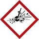
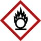
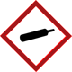
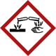
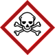
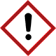

Die Gefahrenpiktogramme (Abbildung 3) sind rotumrandete auf die Spitze gestellte Quadrate mit schwarzem Symbol auf weißem Grund. Jedem Piktogramm sind eine Bezeichnung und ein Code zugeordnet, z. B. GHS02 für das Piktogramm „Flamme“. Ein Piktogramm kann für mehrere Gefahrenklassen gelten. Neu sind die Gefahrenpiktogramme „Gasflasche“, „Gesundheitsgefahr“ und „Ausrufezeichen“ (farbig hinterlegt).
 GHS01 Explodierende Bombe |
GHS02 Flamme |
 GHS03 Flamme über einem Kreis |
 GHS04 Gasflasche |
 GHS05 Ätzwirkung |
 GHS06 Totenkopf mit gekreuzten Knochen |
 GHS07 Ausrufezeichen |
GHS08 Gesundheitsgefahr |
GHS09 Umwelt |
Abb. 3 Die neuen Gefahrenpiktogramme
Eine Zusammenstellung der Gefahrenpiktogramme und ihrer Bedeutungen befindet sich im Anhang 3 – Gefahrenpiktogramme. Anhang 6 zeigt die Gegenüberstellung der Gefahrenpiktogramme zu den bisherigen Gefahrensymbolen.
Im Gegensatz zur bisherigen Kennzeichnung, in der zu jedem Symbol auch ein Kennbuchstabe und die Gefahrenbezeichnung (z. B. Xn – Gesundheitsschädlich) gehörte, werden die neuen Piktogramme ohne eine vergleichbare Bezeichnung verwendet.
Nach CLP-Verordnung wird auf dem Etikett zusätzlich zu den Gefahrenpiktogrammen ein Signalwort angegeben. Dieses richtet sich nach der Schwere der Gefahr und soll auf den ersten Blick die potentielle Gefährdung signalisieren. Die Signalwörter lauten:
Das Signalwort „Gefahr“ kennzeichnet schwerwiegende Gefährdungen.
Das Signalwort „Achtung“ wird bei Kategorien mit geringeren Gefährdungen verwendet.
Auch wenn auf dem Etikett mehrere Piktogramme abgebildet sind, wird nur ein Signalwort angegeben, immer das mit der schwererwiegenden Gefahr.